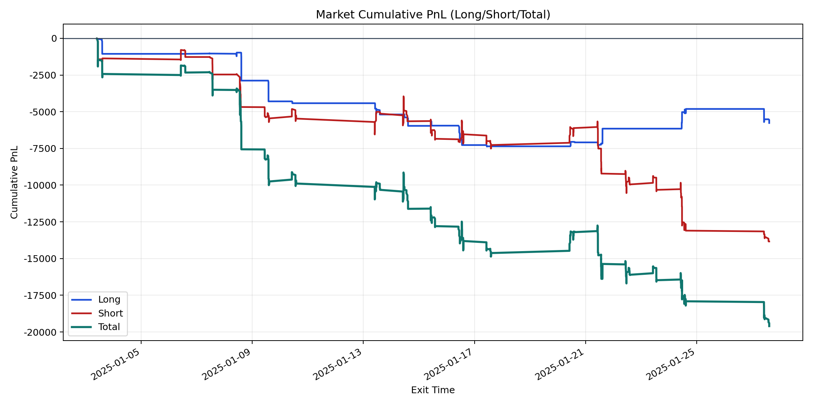
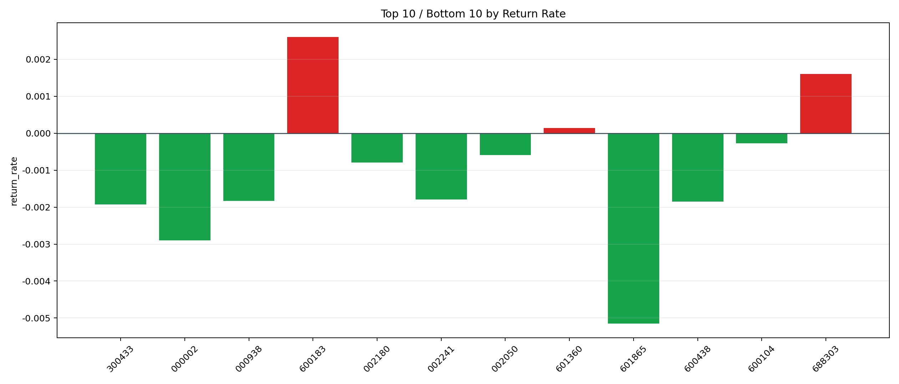

| repo_root | /home/haoranyou/data/output/dynamic_AUM_TAKER_index300 |
|---|---|
| period_months | 1 |
| period_label | 2025-01-03_to_2025-01-27 |
| start_time | 2025-01-03 09:48:37 |
| end_time | 2025-01-27 14:42:42 |
| n_trades | 1002 |
| n_symbols | 12 |
| total_pnl | -19602.99710000032 |
| long_total_pnl | -5768.3794999999955 |
| short_total_pnl | -13834.61760000032 |
| total_entry_notional | 17402423.0 |
| long_entry_notional | 4409796.0 |
| short_entry_notional | 12992626.999999996 |
| total_return_rate | -0.0011264521670344596 |
| long_return_rate | -0.0013080830723235259 |
| short_return_rate | -0.0010648052622460665 |
| top_symbols_by_return | ["600183", "688303", "601360", "600104", "002050", "002180", "002241", "000938", "600438", "300433"] |
| bottom_symbols_by_return | ["601865", "000002", "300433", "600438", "000938", "002241", "002180", "002050", "600104", "601360"] |

